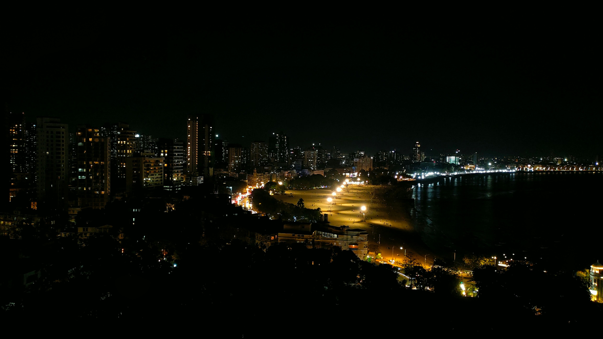
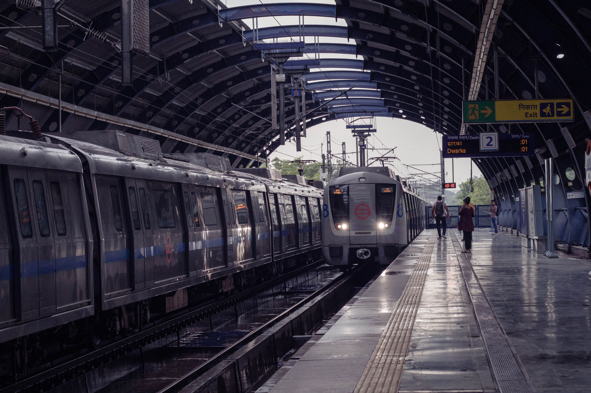
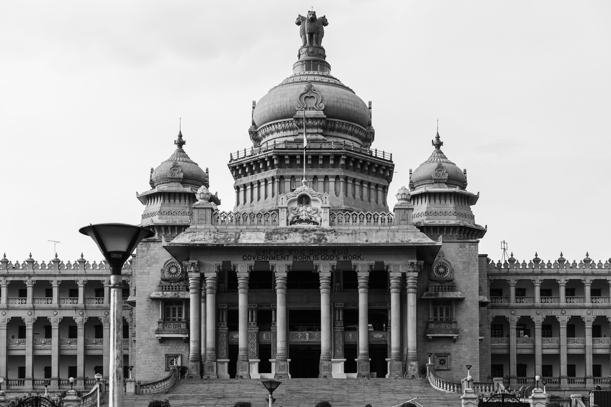
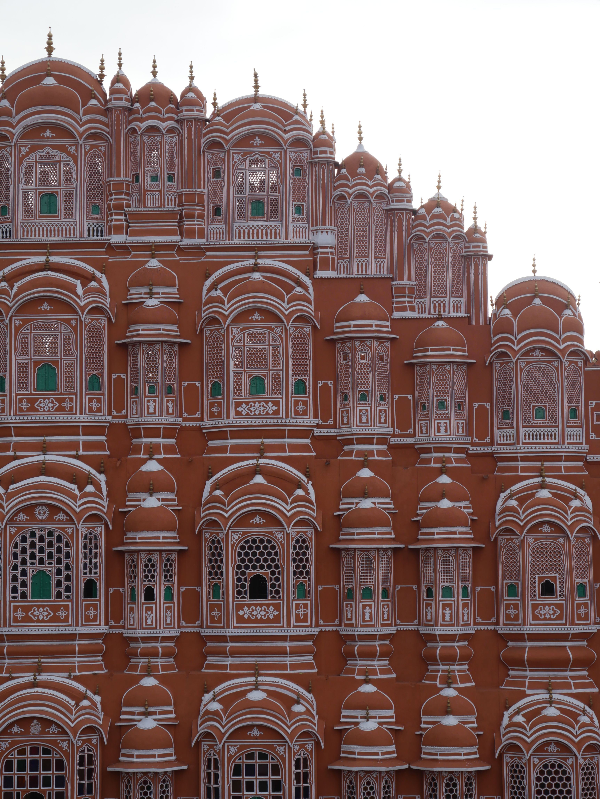
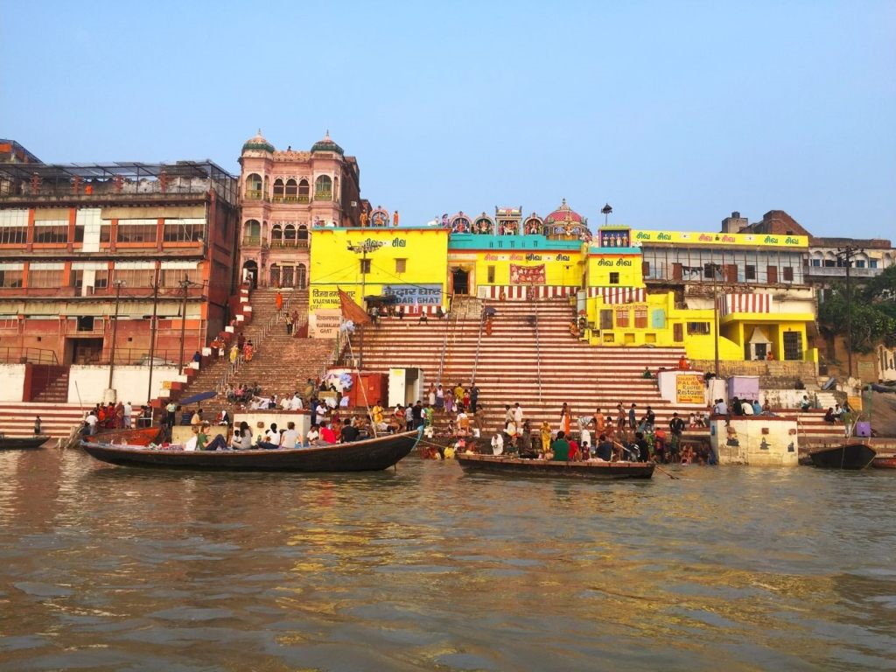
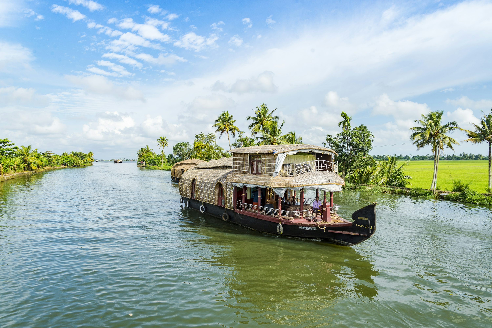

The cities
Six cities, six economies. Click any photo to look closer.

Mumbai · finance and film, ~$310B metro output

Delhi · government, logistics and a 390 km metro

Bengaluru · software exports and 40% of India's unicorns

Jaipur · tourism, gems and jewellery

Varanasi · pilgrimage, silk and the river economy

Kochi · spices, shipping and the backwaters